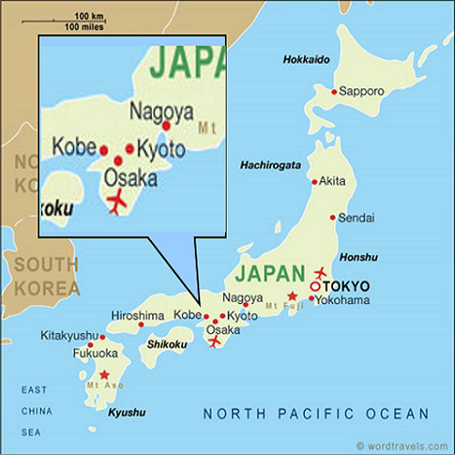
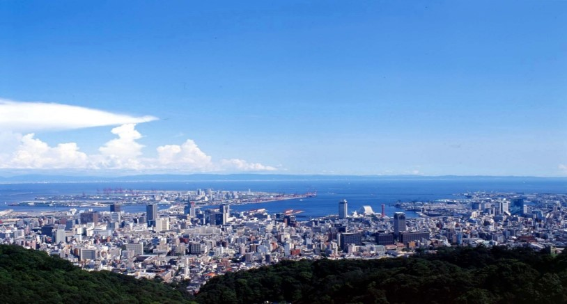
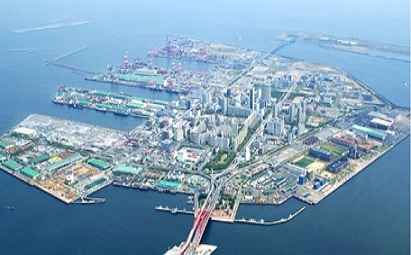
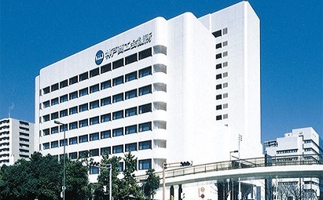

A Brief Introduction to Kobe
Location: Midwest Japan, Next to Osaka and KyotoPopulation: 1.5 million, 6th largest city in Japan
Average Temp (Apr): 19 ºC / 66.2 ºF～ 10 ºC / 50 ºF
Compact, convenient cosmopolitan city in a natural setting (mountains & ocean) Mt. Rokko, Osaka Bay & Inland Sea etc.




International Access
①Fly to Knasai International Airport (KIX)②Transfer to Kobe by sea or road

Proposed Venue & Date
Venue: The Kobe Chamber of Commerce and Industry (KCCI) and Ariston Hotel (connected to KCCI)Date: 19th - 22nd April 2020 (19th reception/20th-21st conference/22nd excursion)



Easy access - Located on Port Island, a man made island directly in front of downtown Kobe.
Meeting rooms are located on the 3rd floor of the Kobe Chamber of Commerce and Industry while poster sessions and exhibition take place on the 2nd floor.
All dining and function will take place in the adjacent Ariston Hotel Kobe which connects to the chamber of commerce via undercover walkway to make for a convenient and compact venue space.